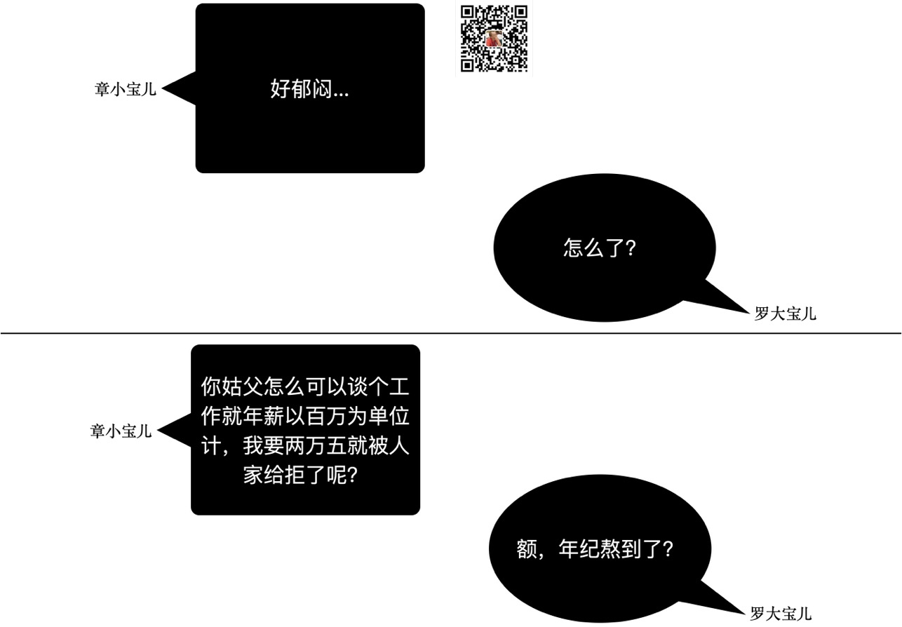

怎么做到年薪以百万单位起跳？
王福强
章小宝儿急迫需要赚钱，因为得赚钱买房子跟罗大宝儿结婚，虽然双方家里都条件不错，但章小宝儿还是想靠自己多一点儿，所以，他今年重新找工作，想找一个薪资待遇更高的职位，只不过…

以百万单位谈年薪，很多时候，确实得年纪到了才行，但也不尽然，有的人年纪不到也可以年薪百万，有的人即使年纪到了那个范围也不到百万，但如果真得能够年薪百万、几百万以百万为单位起跳，有几个因素还是得考虑的，即前瞻的眼光、行业的选择以及时间的积累。
前瞻的眼光
罗大宝儿她老姑夫的年代是电脑和互联网还没怎么萌生的年代，有台电脑玩扑克牌都已经欣喜若狂了， 不像现在的年轻人，年纪轻轻就享受互联网和移动互联的便利和习以为常。
好在她老姑夫年少的时候好奇心强， 各种电脑报、程序员杂志的看，超前感受到了电脑和互联网的召唤，所以早早地就立志学好计算机，报考专业也是自己选的CS（不是那个CS，是Computer Science的CS，虽然那个CS她老姑夫在大学的时候也没少玩），因为父母不懂，农村出来的娃儿，自食其力，都懂的吧？
行业的选择
前瞻的眼光带来的就是前瞻的行业选择，要年薪百万起跳（或者几十万起跳），行业是一个很大的决定因素，如果不是互联网从业者，你很难收获祖国这三四十年的经济上行红利（除非你炒房，如果这也算是行业的选择的话），即使现在造车很热，各个车场double薪资从传统车企挖人，但薪资水平跟互联网比应该还是有些差距的。
所以，要年薪百万起跳，首先要选对行业，起码解决80%的困扰，所谓男怕入错行，或许说的就是这个意思吧~
时间的积累
江主席曾经说过，“个人努力固然重要，但也要考虑历史的进程嘛”， 行业选好了，个人努力才会锦上添花，行业选不好，个人再努力其实收获也会很有限，但不管怎么说，（同等起跑线的情况下）努力一定是比不努力的人超前的概率更大，只要不把一年的经验用十年，时间的积累永远是偏向努力之人的。
后话
当然， 还有一个最牛逼的因素，运气。
运气好，可以一夜暴富，运气不好，哼哼，上面都有了也可能并没卵用，这个世界就是这么不讲道理， ；）
「为AI疯狂」星球上，扶墙老师正在和朋友们讨论有趣的AI话题，你要不要⼀起来呀？^-^
这里
- 不但有及时新鲜的AI资讯和深度探讨
- 还分享AI工具、产品方法和商业机会
- 更有体系化精品付费内容等着你，加入星球(https://t.zsxq.com/0dI3ZA0sL) 即可免费领取。(加入之后一定记得看置顶消息呀！)

存量的时代，省钱就是赚钱。
在增量的时代，省钱其实是亏钱。
避坑儿是省钱的一种形式，更是真正聪明人的选择！
弯路虽然也是路，但还是能少走就少走，背后都是高昂的试错成本。